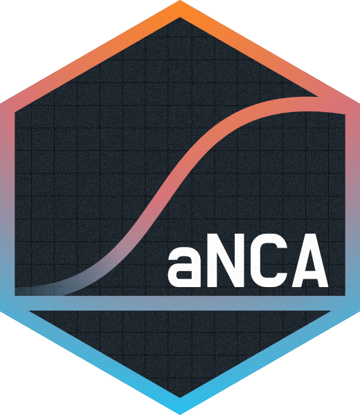

Our aim is to develop and share an open-source R Shiny application for performing Non-Compartmental Analysis (NCA) on clinical and non-clinical datasets worldwide and across pharmaceutical companies.
Description
This application enables users to upload their datasets and perform Non-Compartment Analysis (NCA) on both pre-clinical and clinical datasets, with the results being easily visualizable. Designed with user-friendliness in mind, this app aims to make NCA accessible and straightforward for all scientists. Among the features it currently possess, the App can:
- Customize half life calculation: Either by rule settings definitions or performing manual in-plot adjustments
- Define AUC intervals of interest: Providing by default last and to-infinite calculations
- Visualize data and results with interactive boxplots, summary statistic tables and scatter plots
- Produce PP and ADPP dataset formats of the resulting parameters
- Save your analysis settings and reupload them later to keep on analysing!
Installation
Via pak (recommended)
We recommend using pak for package installation, along with all system dependencies. If you do not have pak available, you will need to set it up first:
install.packages("pak")then you can install aNCA by running:
pak::pak("pharmaverse/aNCA")in your R console.
Via cloning the repository (for contributors)
Alternatively, you can set up the package by cloning the repository through your terminal/shell:
and then loading it directly using devtools in your IDE (e.g. RStudio) console:
devtools::load_all()Quick start
To run the application, simply invoke:
aNCA::run_app()The testing data will be automatically loaded upon application startup. You can provide your own dataset in the data tab. Here you can also specify pre-processing filters.
In the NCA tab, start off by loading the pre-processed data using Submit button. You will also need to choose dose number in the Settings. Then, you will be able to run the NCA analysis. From there, you can also specify different analysis options, like applying flag rule sets and selecting slopes.
After the setup is done and analysis is performed, you are free to explore the results in the Outputs tab. Application supports various customizable plots, as well as report exporting.
For more detailed instructions, check out the Get Started page.
Contributing
As developer
To ensure a clean codebase and smooth cooperation, please adhere to the contributing guidelines.
As user
Feel free to open identified issues, to reach out to us for questions or report in our google sheet for feedback.
Documentation and references
- Please go to our Website for further information on the aNCA app (still in development).
- The main package used by the App is
PKNCA. You can find more of it on its GitHub